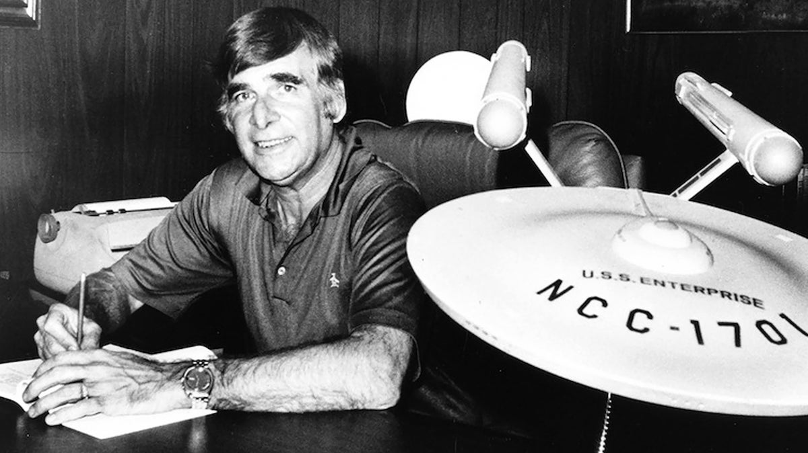

Star Trek is an American science fiction media franchise created by Gene Roddenberry, which began with the eponymous 1960s television series and became a worldwide pop-culture phenomenon. The franchise has expanded into various films, television series, video games, novels, and comic books, becoming one of the most recognizable and highest-grossing media franchises of all time. The franchise began with Star Trek: The Original Series, which debuted in the US on September 8, 1966, and aired for three seasons on NBC. It was first broadcast on September 6, 1966, on Canada's CTV network. It followed the voyages of the crew of the starship USS Enterprise, a space exploration vessel built by the United Federation of Planets in the 23rd century, on a mission "to explore strange new worlds, to seek out new life and new civilizations, to boldly go where no man has gone before". Most Star Trek stories depict the adventures of humans and aliens who serve in Starfleet, the space-borne humanitarian and peacekeeping armada of the United Federation of Planets. The protagonists have altruistic values, and must apply these ideals to difficult dilemmas.  Many of the conflicts and political dimensions of Star Trek are allegories of contemporary cultural realities. The Original Series addressed issues of the 1960s, just as later spin-offs have tackled issues of their respective decades. Issues depicted in the various series include war and peace, the value of personal loyalty, authoritarianism, imperialism, class warfare, economics, racism, religion, human rights, sexism, feminism, and the role of technology. Roddenberry stated: "[By creating] a new world with new rules, I could make statements about sex, religion, Vietnam, politics, and intercontinental missiles. Indeed, we did make them on Star Trek: we were sending messages and fortunately they all got by the network. If you talked about purple people on a far off planet, they (the television network) never really caught on. They were more concerned about cleavage. They actually would send a censor down to the set to measure a woman's cleavage to make sure too much of her breast wasn't showing."